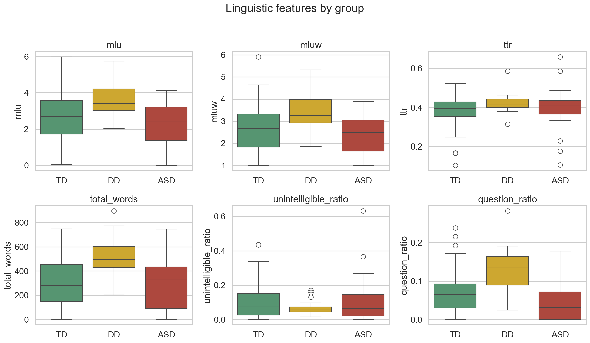
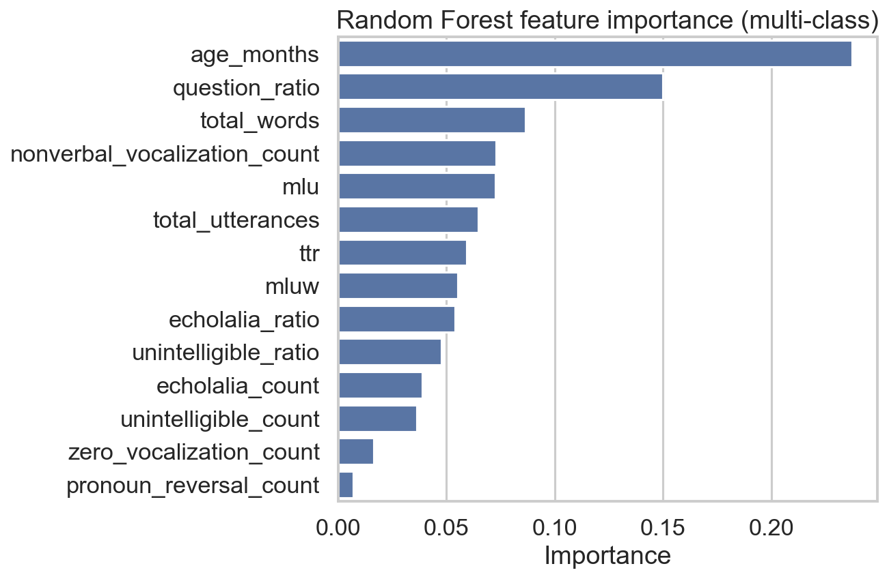
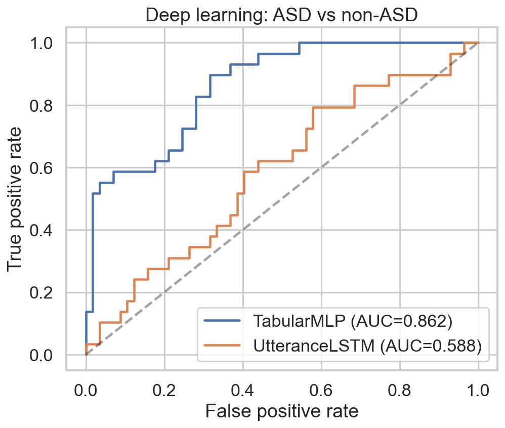

Classification Set
122
children from ASDBank corpora
Interactive dashboard จากข้อมูลจริงของโปรเจกต์: CHAT, features, model, audio และ progress
children from ASDBank corpora
longitudinal therapy sessions
Logistic Regression, 5-fold CV
language and ASD-relevant markers
กราฟสดจากค่า feature/model summary ในโปรเจกต์ อัปเดตอัตโนมัติ
Group/corpus composition จาก classification set
เลือก corpus และ metric เพื่อดูข้อมูลจาก `combined_features.csv`
ค่าเฉลี่ย feature สำคัญจากข้อมูลทั้งหมด
เทียบค่าเฉลี่ยของ feature ระหว่าง ASD / DD / TD
ครบ 13 language features จาก Streamlit เดิม
Scatter, distribution, correlation และ raw data จาก `combined_features.csv`
heatmap และ preview rows เหมือน Streamlit
Risk, uncertainty, XAI, severity, parent concern checklist
ตัวอย่าง feature contribution ต่อ log-odds
เลือก task และ metric เพื่อเทียบโมเดล
ดู performance, threshold behavior, calibration และ uncertainty จาก cross-validation
intended use, caveats, version และ transparency notes
predicted probability vs observed rate
net benefit by referral threshold
low / uncertain / high concern
corpus, sex และ age-band performance เมื่อมีข้อมูลพอ
stress test against corpus artifacts
TPR/FPR และ demographic parity แยกตาม sex, age band และ corpus
decision support audit only
เตรียม workflow ให้ปลอดภัยสำหรับ future Thai validation โดยไม่ claim เกินข้อมูลที่มี
research prototype only
ใช้เป็น screening support, risk estimate, decision support และ progress tracking โดยต้องมี human-in-the-loop และต้องทำ external validation กับข้อมูลเด็กไทยก่อนการใช้งานจริงทางคลินิก
จาก `.wav` / `.mp3` ไปเป็น `.cha`, features และ prediction
เลือกไฟล์และ model size
auto, english, thai, dual_pass
child/adult speaker assignment
post-edit, validate, re-export
| start | end | speaker | lang | conf. | text |
|---|---|---|---|---|---|
| 0.42 | 2.10 | INV | eng | 0.94 | what are you playing with? |
| 2.35 | 3.80 | CHI | eng | 0.88 | car go fast. |
| 4.12 | 4.70 | CHI | paraling | 0.91 | &=laugh |
ตัวอย่าง transcript output
@Begin
@Languages: eng, tha
@Participants: CHI Child Target_Child, INV Investigator
@ID: eng|ASDProject|CHI|4;00.00|male|||Target_Child|||
@Media: session01, audio
*INV: what are you playing with ?
*CHI: car go fast .
*CHI: &=laugh .
@Endกดสลับกราฟจาก `reports/figures/`

Interpretability และ ROC curve

MLP และ Bi-LSTM baseline

เลือกเด็กเพื่อดู delta ของ language features
summary จากหลาย session
Loading progress summary...
แผนที่อธิบายข้อมูล โครงสร้าง pipeline และ deliverables ทั้งโปรเจกต์
ช่วยคัดกรองและติดตามพัฒนาการ ไม่ใช่ diagnosis
TalkBank/ASDBank CHAT transcripts + generated feature CSVs
13 speech-language markers including echolalia
interpretable LogReg baseline + ML/DL comparisons
parent demo, clinician dashboard, project atlas, reports
ไฟล์หลักในโปรเจกต์
แหล่งข้อมูลและหน้าที่ในโปรเจกต์
เทคนิคที่นำมาประยุกต์
คำสำคัญสำหรับอธิบายงาน
screening / decision support only
ข้อจำกัดที่ต้องระบุ
สิ่งที่ควรพัฒนาต่อ